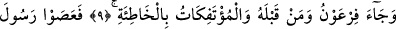
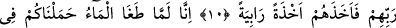
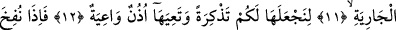
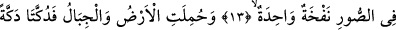
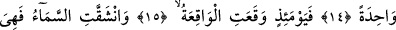
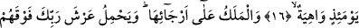
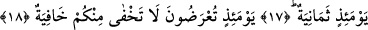

O GÜN HESAP İÇİN
HUZÛRA ALINIRSINIZ
9. Fir’avun, ondan öncekiler ve altı üstüne getirilen beldeler halkı (Lût kavmi)
hep o günahı (şirki) işlediler.
10. Böylece Rablerinin peygamberlerine karşı geldiler, O da onları pek şiddetli bir
şekilde yakalayıverdi.
11. Şüphesiz, su bastığı vakit sizi gemide biz taşıdık;
12. Onu sizin için bir ibret ve öğüt yapalım ve belleyici kulaklar onu bellesin diye.
13. Artık Sûr’a bir defa üflendiği,
14. Yeryüzü ve dağlar kaldırılıp birbirine tek çarpışla çarpılıp darmadağın edildiği
zaman,
15. İşte o gün olacak olur (kıyâmet kopar).
16. Gök de yarılır ve artık o gün o, çökmeye yüz tutar.
17. Melekler onun (göğün) etrafındadır. O gün Rabbinin arşını, bunların da
üstünde sekiz (melek) yüklenir.
18. (Ey insanlar!) O gün (hesap için) huzûra alınırsınız; size âid hiçbir sır gizli
kalmaz.
“Fir’avun” yâni Hz. Mûsa’nın karşısındaki Fir’avun. Burada sâdece Fir’avun’un
ismen zikredilmesi, onun aşırı biçimde kendini yüce görmesi ve kibirlenmesinden
dolayıdır. “Ondan öncekiler” yâni Âd ve Semûd kavimleri dışında ondan önce yaşayan
kâfirler “ve altı üstüne getirilen beldeler halkı” yâni Lût kavmi ve köyleri “hep o
günahı/şirki işlediler.” O hatâyı, şirk günahını işleyegeldiler.
Bu âyette önce Fir’avun’un sonra da ondan öncekilerin zikredilmesi, tahsisten sonra
ta’mîm kabilindendir. Âyetteki “men” mevsûledir. “Kabl/önce” kelimesi, “ba’d/sonra”